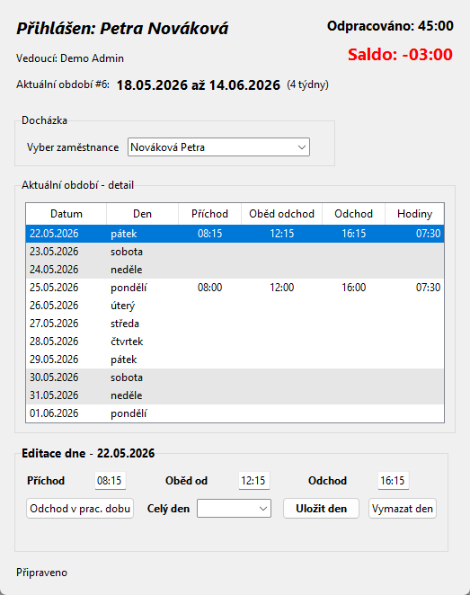
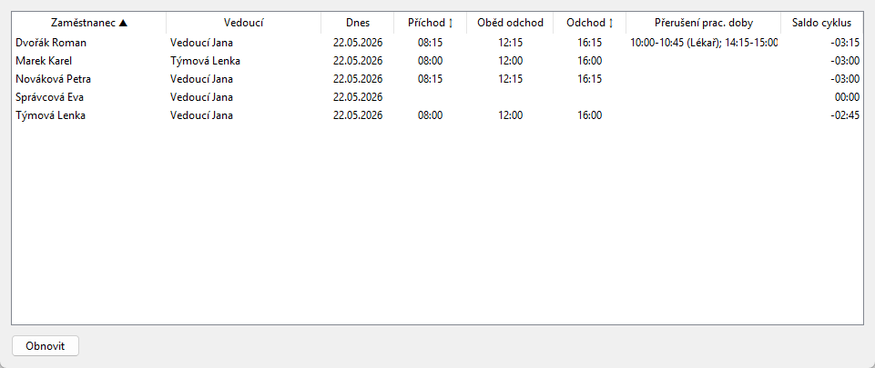
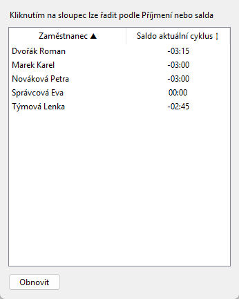
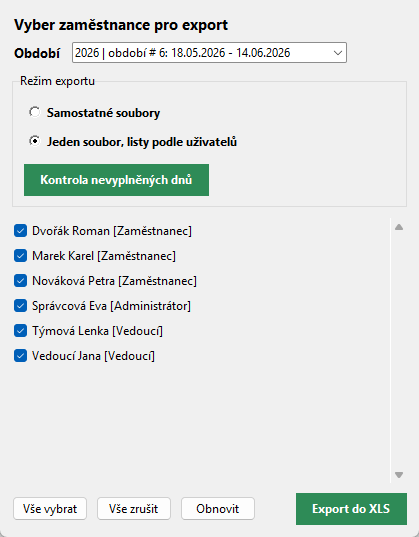
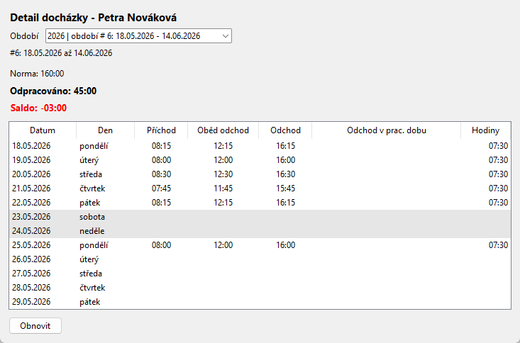
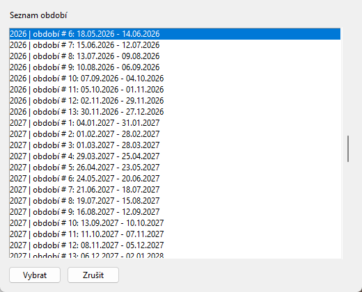
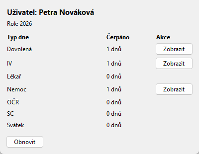
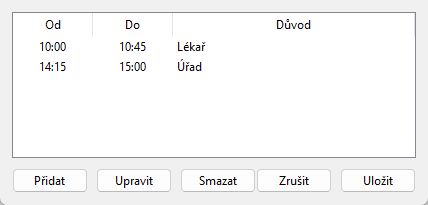

Docházka - uživatelská nápověda pro roli vedoucí
Projekt: Docházka | Aktualizováno: 22. 5. 2026 | Role: vedoucí (manager)
Co může vedoucí dělat
- Vidí sebe a zaměstnance podle nastaveného rozsahu oprávnění.
- Rozsah Podřízení znamená přímé podřízené; rozsah Podřízení včetně dalších úrovní zahrne celý strom.
- Má menu Vedoucí se seznamem dnešní docházky, saldem zaměstnanců a hromadným XLS exportem.
- V hlavním okně může přepnout zaměstnance a upravit docházku v povoleném rozsahu.
- Ruční časy se zadávají po 15 minutách a odchody v pracovní době respektují pevnou dobu.
1. Hlavní okno vedoucího

Screenshot 1: Vedoucí má v hlavním okně výběr zaměstnance. Po přepnutí se načte jeho aktuální nebo vybrané období, editor dne a souhrn salda.
- Výběr zaměstnance je omezen oprávněním role.
- Tabulka období funguje stejně jako u zaměstnance: výběr řádku načte den do editoru, dvojklik umožní rychlou editaci časů.
- Menu Export exportuje období právě vybraného zaměstnance.
2. Seznam dnešní docházky

Screenshot 2: Okno Vedoucí - Seznam dnešní docházky ukazuje dnešní příchod, oběd, odchod, přerušení pracovní doby a saldo cyklu.
| Sloupec | Význam | Řazení |
|---|
| Zaměstnanec | Příjmení a jméno zaměstnance. | Kliknutím na hlavičku lze řadit abecedně. |
| Vedoucí | Vedoucí zaměstnance ve formátu příjmení a jméno. | Jen zobrazení. |
| Příchod | Dnešní příchod nebo typ celého dne. | Kliknutím lze řadit podle času; prázdné hodnoty jsou na konci. |
| Odchod | Dnešní odchod. | Kliknutím lze řadit podle času; prázdné hodnoty jsou na konci. |
| Přerušení prac. doby | Odchody v pracovní době včetně důvodu. | Jen zobrazení. |
| Saldo cyklus | Aktuální saldo zaměstnance v cyklu. | Jen zobrazení. |
Řaditelné sloupce mají v hlavičce značku. Aktivní řazení ukazuje směr šipkou nahoru nebo dolů.
3. Zaměstnanci - saldo

Screenshot 3: Okno ukazuje saldo aktuálního cyklu pro viditelné zaměstnance.
- Sloupec Zaměstnanec lze řadit podle příjmení.
- Sloupec Saldo aktuální cyklus lze řadit podle hodnoty salda.
- Záporné saldo znamená méně odpracovaného času vůči očekávané době za vyplněné pracovní dny.
4. Hromadný export XLS

Screenshot 4: Hromadný export umožňuje vybrat zaměstnance, období a způsob výstupu.
- Samostatné soubory vytvoří pro každého zaměstnance vlastní XLS/XLSX.
- Jeden soubor, listy podle uživatelů vytvoří jeden workbook s více listy.
- Kontrola nevyplněných dnů před exportem upozorní na zaměstnance s chybějící docházkou.
- Export běží na pozadí; během zpracování se zobrazí busy okno.
5. Detail docházky, období a statistika

Screenshot 5: Detail docházky je čtecí přehled období pro vybraného zaměstnance.

Screenshot 6: Výběr období přepíná hlavní okno na jiný čtyřtýdenní cyklus.

Screenshot 7: Statistika ukazuje roční čerpání typů celého dne pro aktuálně vybraného zaměstnance.
6. Odchod v pracovní době

Screenshot 8: Vedoucí může v povoleném rozsahu doplnit více odchodů v pracovní době pro jeden den.
- Časy musí být v pořadí od menší než do.
- Intervaly se nesmí překrývat.
- Část intervalu spadající do pevné doby se neodečte, část mimo pevnou dobu ano.